JoVee Rig
JoVee RigLigue guitarra, baixo e voz na interface de áudio que você já tem, cada um com o seu próprio rig.
Baixar o JoVee Rig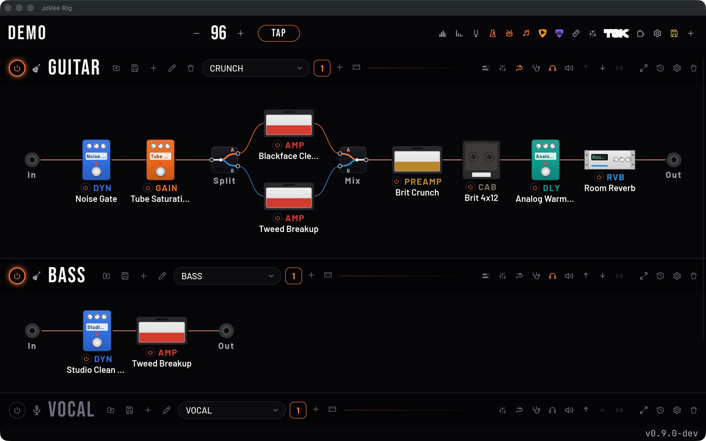
Os amps e pedais do app, as capturas .nam e os IRs que você baixar e os plugins VST3 do seu computador, todos na mesma cadeia.
Guitarra, baixo e voz na mesma interface, cada um com o seu amp e os seus pedais.
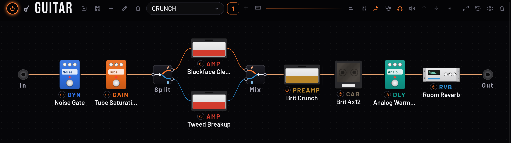
Divida o sinal entre dois ou mais amps e misture tudo de volta antes do delay.
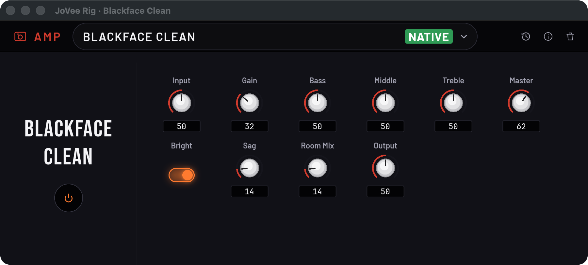
Cada amp e pedal abre com os seus próprios botões, que você gira enquanto toca.
Baixe do TONE3000 de dentro do app, com a sua chave, ou carregue os arquivos que você já tem.
Use os VST3 instalados no seu computador no meio da cadeia.
Mande o sinal para um pedal da sua pedaleira e traga de volta no meio da cadeia.
A bateria, o metrônomo e os delays seguem o mesmo andamento do projeto.
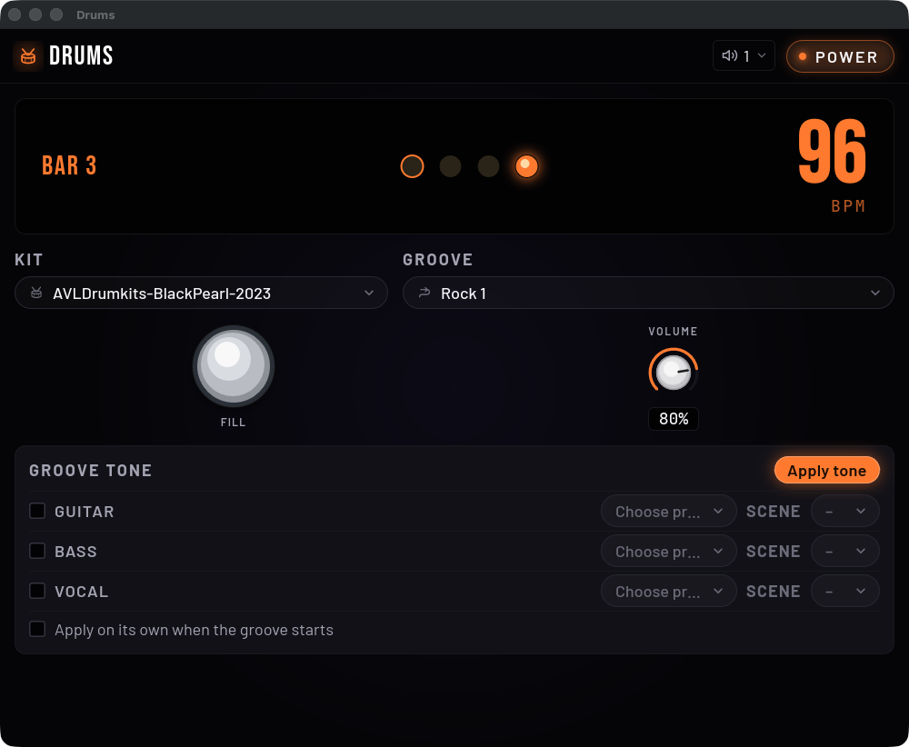
Toque junto com 75 ritmos de bateria e puxe a virada quando quiser.
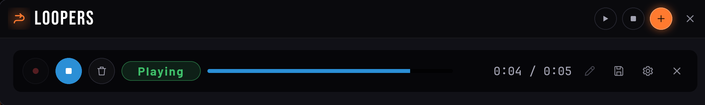
Até 8 loops por cadeia tocando juntos no mesmo compasso, com reverso e corte da onda.
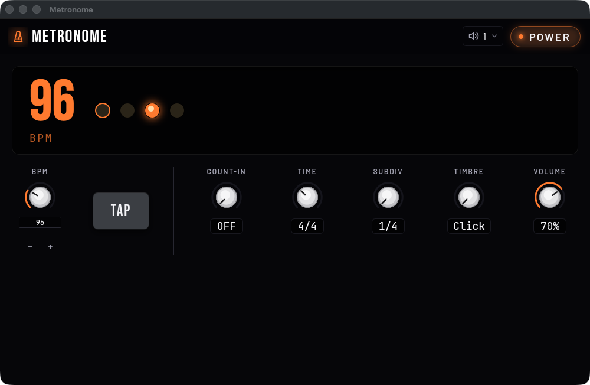
Marque o andamento no tap e escolha o compasso e a subdivisão.
O metrônomo conta antes de você entrar.
Ajuste o timbre ouvindo uma guitarra gravada em loop, com as mãos livres.
Cada ritmo e cada base trocam a guitarra para o preset que você salvou com eles.
Confira afinação, frequências e volumes enquanto toca.
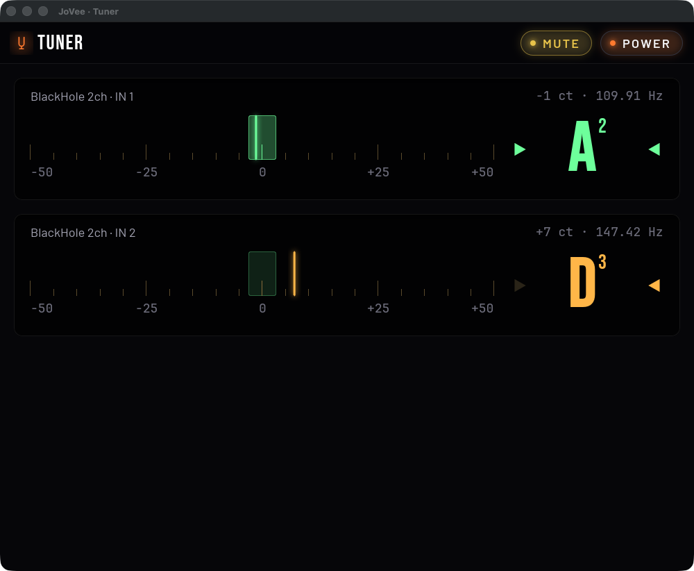
Um para cada entrada: afine uma guitarra enquanto a outra toca.
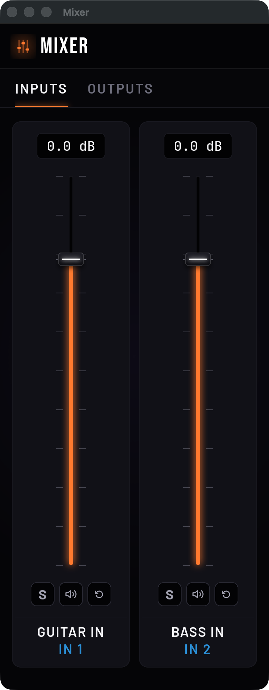
Um fader para cada entrada e saída da interface, ajustável enquanto você toca.
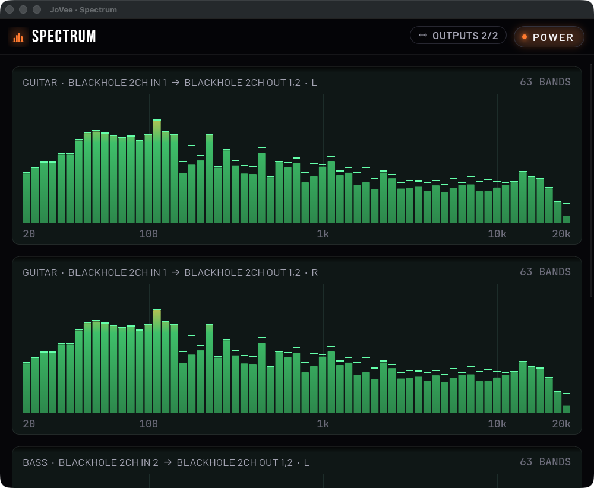
Veja em tempo real as frequências que saem em cada saída.
Mostra qual bloco está estragando o timbre e qual botão girar.
O nível de cada entrada e saída, com o nome de cada uma.
A guitarra entra por uma interface e os monitores saem por outra.
Verso, refrão e solo ficam salvos como cenas de cada preset.
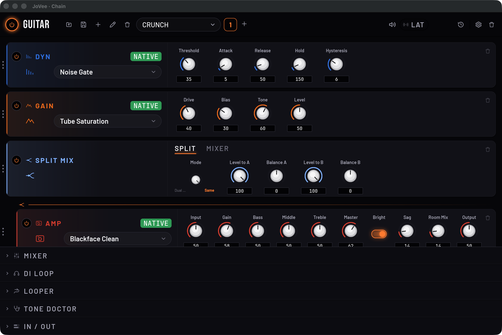
Todos os botões da cadeia em uma tela, na ordem do sinal.
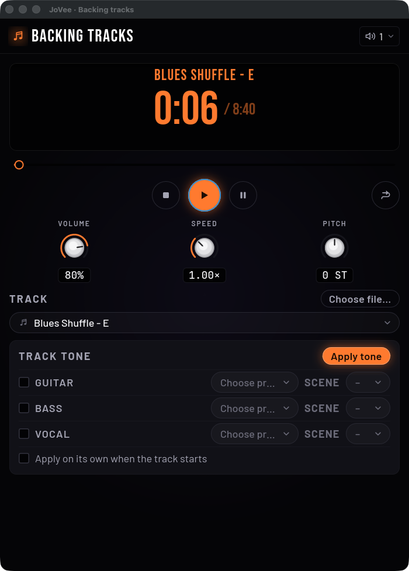
Toque junto com bases de rock, blues e funk, mais devagar ou em outro tom.
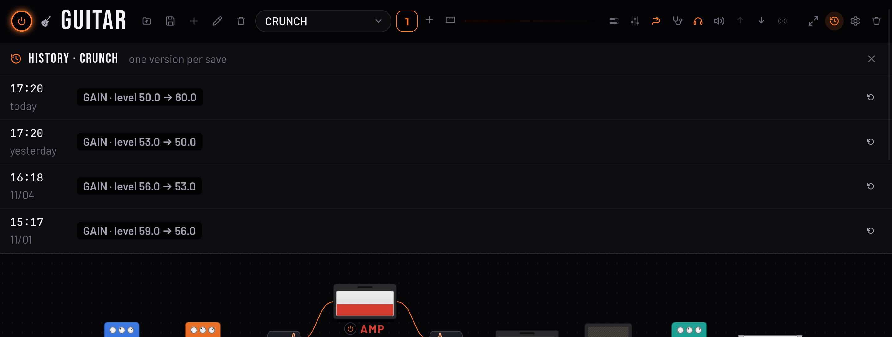
Volte para qualquer uma das últimas 50 versões de cada preset.
Aperte o footswitch e escolha o que ele faz no app.
Cada cena manda PC, CC ou SysEx para os seus outros equipamentos.
Um botão mostra quanto tempo o som leva da entrada até a saída de cada cadeia.
Escolha entre Classic, Neon e Rack.
Português, English, Español e mais seis.
No macOS, o app avisa quando sai versão nova e atualiza com um clique.
Cada app faz uma coisa. O Rig já está disponível; os outros chegam em breve.
 JoVee Studio
JoVee StudioGrave, edite, mixe e finalize músicas em várias pistas, com o Rig dentro.
Em breve JoVee Jam
JoVee JamToque junto com a música separada em stems, com tab, acordes e letra.
Em breve JoVee Live
JoVee LiveToque ao vivo pela internet com até 6 músicos, cada um no seu rig e com o seu próprio retorno.
Em breve JoVee Tone
JoVee ToneRecria o timbre de uma gravação por medição e configura o Rig ou a sua pedaleira.
Em breve JoVee Lut
JoVee LutGuia a regulagem da sua guitarra passo a passo, medindo cada corda pelo som.
Em breve JoVee
JoVee